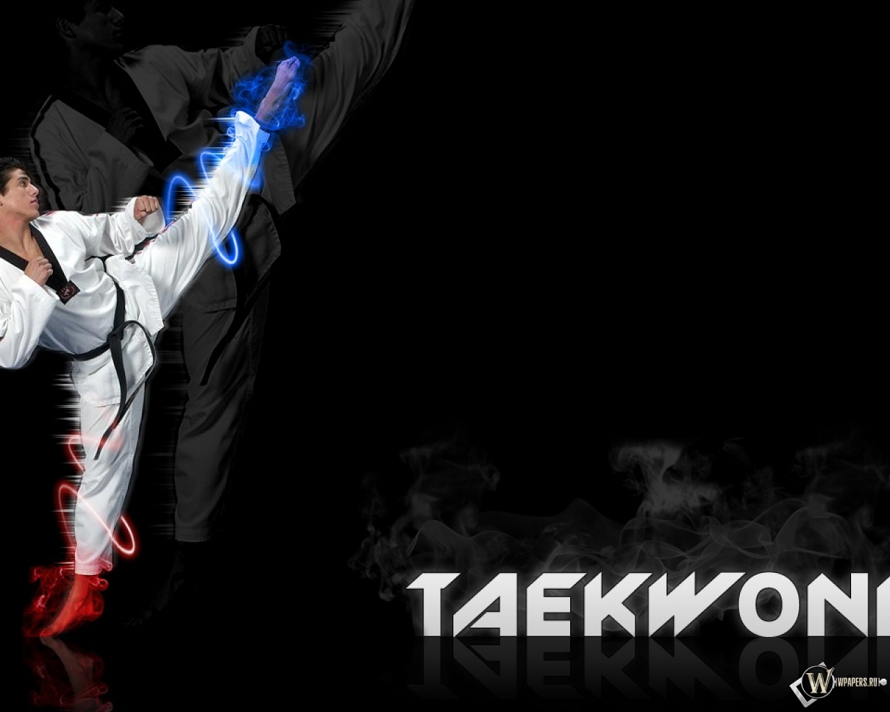

La filosofía del Taekwondo se basa en cinco principios: Cortesía, Integridad, Perseverancia, Autocontrol y Espíritu Indomable.
La filosofía del Taekwondo se basa en cinco principios: Cortesía, Integridad, Perseverancia, Autocontrol y Espíritu Indomable.
"Con la liberación de Corea del régimen colonial japonés después de la
Segunda Guerra Mundial, se reforzó las prácticas del “Subak” y del
“Taekkyon”, como símbolo de identidad cultural de Corea, debido a que
se quería revivir las tradiciones coreanas y hacer una distinción del
Karate japonés y de las artes coreanas, es como fue tomando forma lo
que actualmente conocemos como Taekwondo"
-- Julio Cesar Amendaño Murillo